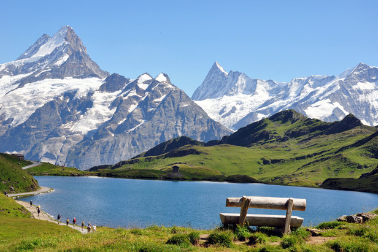

Mes Hobbies
Ce que j'aime
- faire du sport

courrir sa fait du bien au morale
- Cuisine du monde

La cuisine exotique est une grande passion que j'ai découvert à travers mes voyages
- Musique
Le violon est une passion et une pratique depuis l'enfance
- promenade en montagne

j'habite les alpes et je profite de cette proximité de la montagne pour me ressourcé
- photographie

Une image vaut mieux que mille mots
les endroits que je voudrais visité
- istanbul

J'ai toujours rêver de visiter istanbul cette ville est magnifique et si cosmopolite !
- Cuba
Des couleurs, une histoire, une ambiance ! Cuba et ses maisons coloré me font vraiment envie
- st petersburg

architecture, culture, arts, tant de choses qui donne envie d'aller sur cette place rouge et admiré ces merveilles architecturale
- japon

Paysage sortie d'un manga et technologie le combo parfait pour un voyage de rêve
- santorin

santorin pas de mots pour décrire la beauté de son paysage